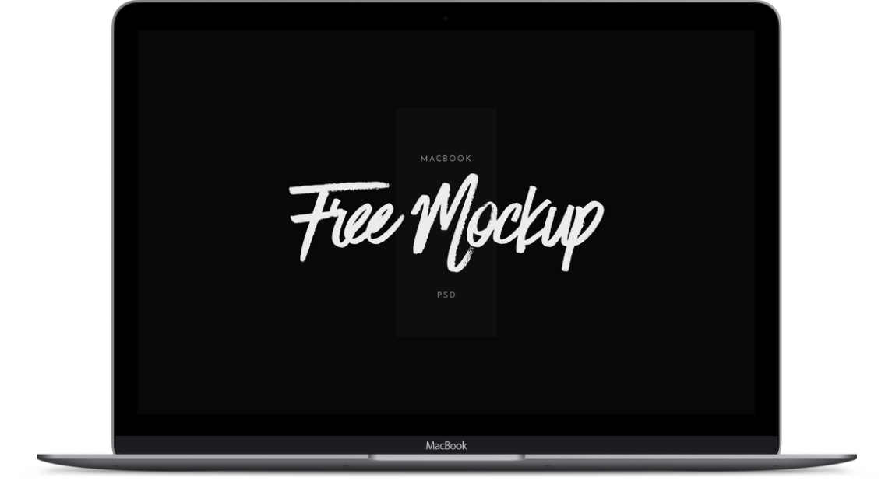
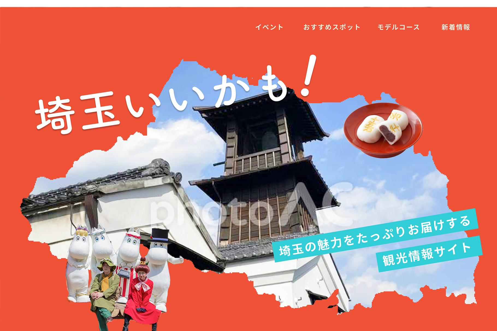
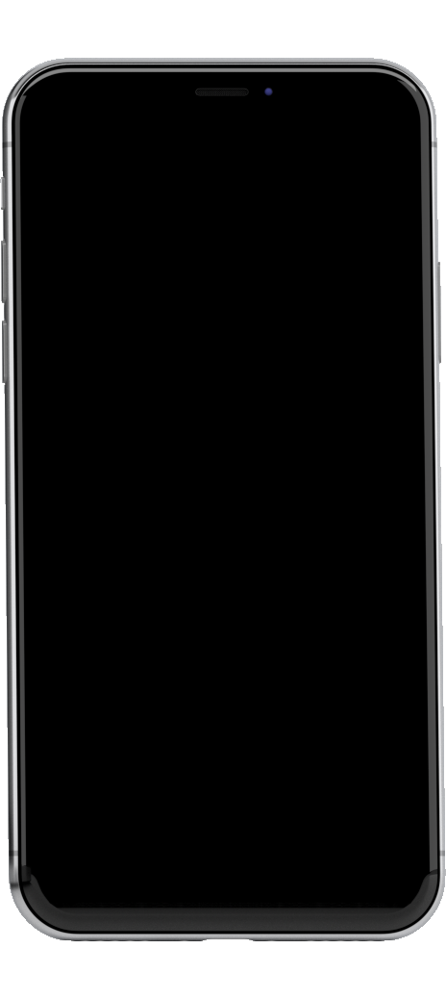
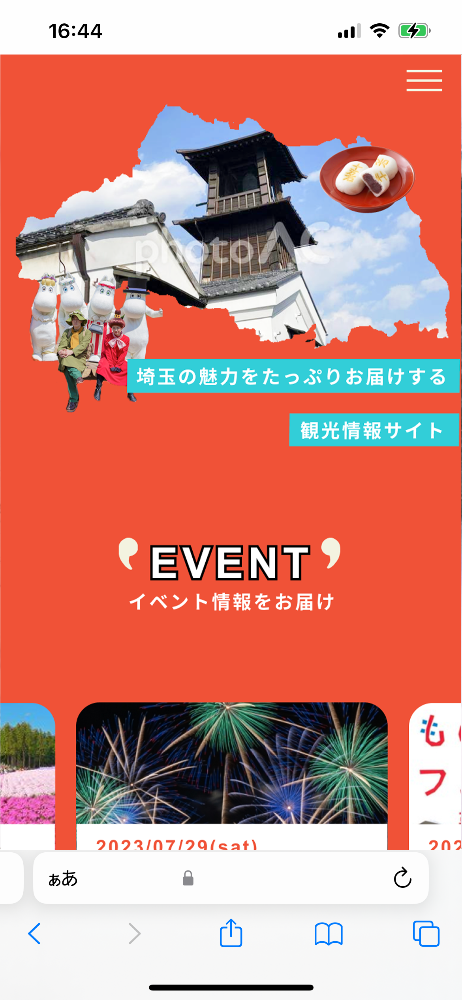

works
埼玉観光情報サイト（架空）




目的：埼玉県地域活性化のため、魅力を観光客へ紹介する
ターゲット：国内外の観光客
- 友達・ファミリーとわいわい楽しむイメージ
- ワクワクするイメージで境界線を波状にしたり切り抜きの写真などを貼り付けている
- 旅行をリアルに想像できるよう写真をメインに

point1
埼玉県の旗にある勾玉をさりげなく各セクションのタイトルにあしらいとして入れ、カラーも勾玉部分から展開
point2
目的や場所別など様々な入り口を用意することでユーザーが迷わない
point3
強めの色を使用しているため、ごちゃごちゃにならないよう色のバランスを考えながら配置